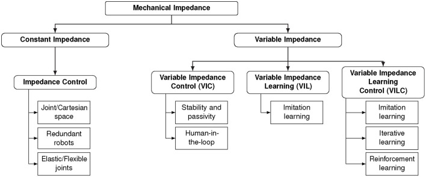
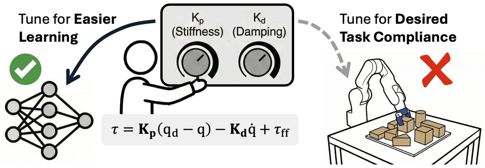
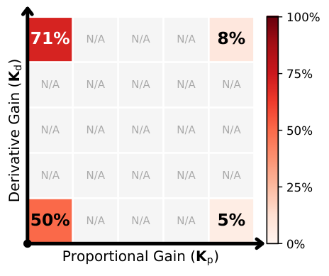
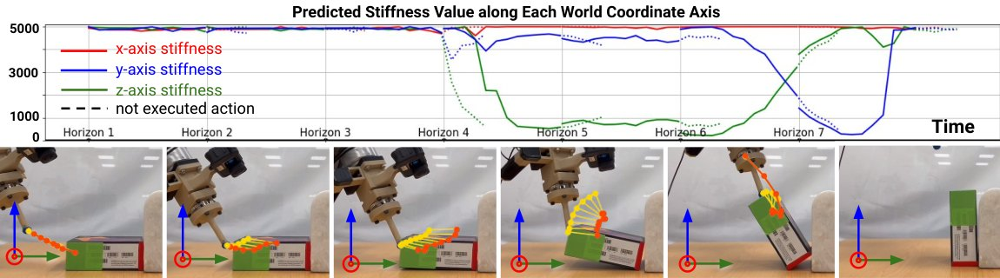
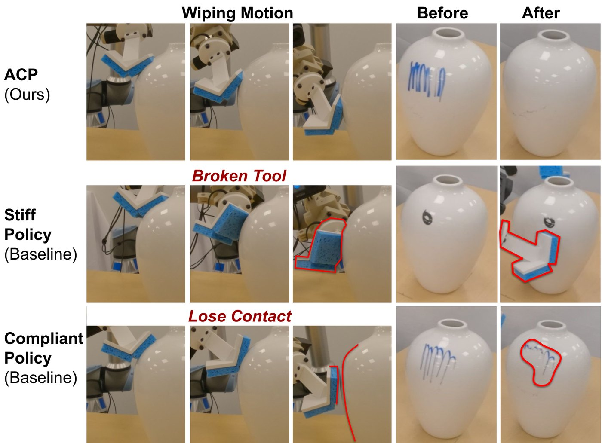

Learned Variable Impedance vs. a Tuned Fixed Gain
Part of a series on robot learning, read against motor neuroscience: variable impedance · adaptation · passivity · safe RL · stiffness geometry · games. The overview is From Sensorimotor Neuroscience to Robot Learning.
I read twenty papers on learning variable impedance (RL and imitation, 2019–2026) and asked each one the same question: did it beat a well-tuned fixed impedance, and if so, why? Only one tuned the fixed baseline with an optimiser at a matched budget. Where learned impedance wins, something the controller fights varies, is hidden from the set-point, and changes which stiffness is best. A two-line model makes the condition precise: stiffness is the answer to force uncertainty, compliance the answer to position uncertainty, and a schedule pays only when the kind of uncertainty changes between phases and the change is detected quickly.
1. What is being learned
A Cartesian impedance controller makes the end effector behave like a spring and damper around a target,
$$F = K\,(x_d - x) + D\,(\dot x_d - \dot x), \qquad \tau = J(q)^\top F + \tau_{\text{comp}}(q,\dot q),$$where \(\tau_{\text{comp}}\) cancels gravity and, often, Coriolis terms. "Variable impedance" means a policy chooses \(K\) and \(D\) as well as \(x_d\) at every step. VICES (Martín-Martín et al., IROS 2019) made this the RL action: a target pose plus per-axis gains \(k_p, k_v\), usually with \(D = 2\zeta\sqrt{K\Lambda}\) so that a damping ratio \(\zeta\) rather than a raw damping is learned. The choice of action space matters on its own: Aljalbout et al. (RA-L 2024) trained over 250 agents across 13 action spaces and found it changes both how well a policy learns and how well it transfers to hardware. Abu-Dakka and Saveriano's review sorts the field into control with varying gains, learning gains from demonstration, and learning them by interaction (Figure 1). Most of what follows is in the last two branches.

2. How baselines are usually built
Most papers compare against two or three hand-picked constants: 300 and 1000 N/m, 400 and 1200 N/m, 300 and 3000 N/m, or a single "compliant" 500 N/m. Bogdanovic et al. (RA-L 2020) sweep a ten-point grid of joint gains. The exception is the CHEQ polishing work (Cramer, Jäschke and Trimpe, IFAC 2025), whose fixed baseline is tuned by Bayesian optimisation over 500 episodes, plus a variant tuned separately for each of five sections of the workpiece. That is the protocol the comparison needs, and it is rare.
"Tune to Learn" (Bronars, Park and Agrawal, 2026) explains why the baseline matters so much. Controller gains are an inductive bias for the learner, not only a property of the task (Figure 2). Reinforcement learning from scratch succeeded in every gain regime they tried once its own hyperparameters were re-tuned, while behaviour cloning strongly preferred compliant, overdamped gains: in their end-to-end cloning pipeline the compliant, overdamped corner reached 71% and the stiff corners 5–8% (Figure 3). They also report a counterintuitive pairing: a policy running on gains 32 times softer achieved about five times the effective task-level stiffness of a policy on stiff gains, because the policy's own feedback adds stiffness. The impedance that matters is the impedance of the whole loop, not the number in the controller.


3. Where a fixed gain ties
- VICES: on door opening a fixed medium impedance learns faster and reaches the same reward; variable impedance wins on surface wiping, through a lower force penalty.
- VIDP (Khalil et al., 2026): on peg-in-hole the stiff fixed policy ties the learned one, 80% against 80%.
- MATCH (Brown, Hollinger and Lee, 2026): at nominal noise, pose control and VICES are equal (95.4% against 95.2%); under ±7.5 mm localisation noise a hybrid force/position policy beats both.
- Legged robots (Spoljaric et al., 2025): the fixed P50 gain beats every variable-stiffness policy on cost of transport.
All four are tasks whose geometry is known and whose contact timing is predictable. Nothing the policy could learn about stiffness is hidden from the target trajectory.
4. Where learned impedance wins, and why
- Geometry the set-point cannot see. Geiger, Asfour, Hogan and Lachner (T-RO 2026), on a KUKA iiwa: a uniform high stiffness scores 100/13/0% on cylinder/square/star pegs; learned directional stiffness succeeds on all three; the best hand-tuned non-uniform stiffness after 15 iterations reaches 100/87/70; removing directional adaptation gives 0/0/0. Their stiffness is diagonal in a task frame, set along each direction by an energy-based estimate \(k^\ast = 2\langle f, e\rangle/\lVert e\rVert^2\) from the measured wrench and the deviation from a reconstructed zero-force trajectory.
- Contact timing that is not known in advance. Bogdanovic et al.: on a hopping leg, the learned gains drop just before an impact whose time is uncertain, then rise for push-off; fixed gains were stable only up to about \(K_p = 5\), while the variable policy briefly used 10.
- Phases that need conflicting stiffness. VIDP's wins are on cable routing (75% against 0% stiff and 60% compliant) and pulley tasks (70/35/40).
- Unseen objects and perturbations. Adaptive Compliance Policy (Hou et al., ICRA 2025) predicts a reference pose, a virtual target and a stiffness along one compliant direction derived from the measured force. On item flipping it scores 96% against 23% for a uniformly compliant policy and 14% for a stiff one; on vase wiping 93.75% against 43.75%. Figure 4 shows the compliant direction rotating from the approach axis to the contact normal; Figure 5 shows what goes wrong with either constant.


5. A model of when a schedule pays
Strip a contact task to its two uncertainties. In free space an unmodelled force with standard deviation \(\sigma_F\) (a payload, a cable, a push) displaces a spring of stiffness \(K\) by \(\sigma_F/K\). In contact, an unknown surface position with standard deviation \(\sigma_x\) turns into a force error \(K\sigma_x\). With \(\lambda\) converting force error into position-error units, one stiffness used in both phases pays
$$J(K) = \frac{\sigma_F^2}{K^2} + \lambda K^2 \sigma_x^2, \qquad K^\ast = \Big(\frac{\sigma_F^2}{\lambda\sigma_x^2}\Big)^{1/4}, \qquad J(K^\ast) = 2\sqrt{\lambda}\,\sigma_F\sigma_x .$$A schedule that is stiff in free space and soft in contact pays almost nothing in either phase, so it wins whenever both uncertainties are present. If either one is zero, the best constant is already optimal. This is Hogan's causality argument in numbers: against an uncertain force the right answer is stiffness, against an uncertain position it is compliance.
The catch is that the schedule has to know which phase it is in. If the switch arrives a fraction \(\varphi\) of the way into the contact phase, the stiff gain is still active for that fraction, and the best reactive schedule must trade the two again. Repeating the minimisation with \(\lambda\sigma_x^2\) scaled by \(\varphi\) gives a cost of \(2\sqrt{\lambda\varphi}\,\sigma_F\sigma_x\): a fraction \(\sqrt{\varphi}\) of the best constant (Figure 6). Detecting contact within 1% of its duration keeps 90% of the benefit; detecting it a quarter of the way in keeps half.
The model is crude, but it reproduces the pattern in Section 4. The wins are on tasks where force uncertainty and position uncertainty dominate in different phases (flipping, wiping, routing) and where contact is sensed directly. The ties are on tasks where one uncertainty dominates throughout.
6. The sensorimotor connection
The human evidence (reviewed in Impedance in the Human Motor System) lines up with the model above. Burdet et al. (2001) showed that people stiffen selectively along a direction made unstable by an unpredictable, error-amplifying force: stiffness against force uncertainty. Franklin et al. (2008) explained how one learning rule separates the two kinds of learning. Errors of consistent sign are learned as a feedforward force. Errors of random sign are learned as co-contraction. A decay term removes stiffness that is no longer needed. Three lessons carry over.
- Learn the predictable part as force, not stiffness. A learned stiffness that rises in a constant field means the policy has not learned the force. A fair test gives the fixed-gain baseline a learned feedforward or target correction.
- Effective stiffness includes feedback. The stretch reflex adds stiffness on top of the muscles' intrinsic stiffness, and its long-latency gain is set by the task (Pruszynski and Scott 2012). Tune to Learn's finding that the policy's feedback sets the effective stiffness is the robot version of the same fact.
- Put a cost on co-contraction. Without an effort or energy term, being stiff everywhere is free in simulation and expensive on hardware.
7. What a convincing comparison needs
- A fixed impedance tuned by an optimiser at the same episode budget as the learner, per axis and, where phases differ, per phase.
- Hyperparameters re-tuned for each arm, given Tune to Learn.
- A named hidden variable that moves the optimal stiffness, an oracle that knows it, and a check that the oracle schedule beats the best constant by more than the noise.
- The latency with which the policy can detect a phase change, because that sets the ceiling.